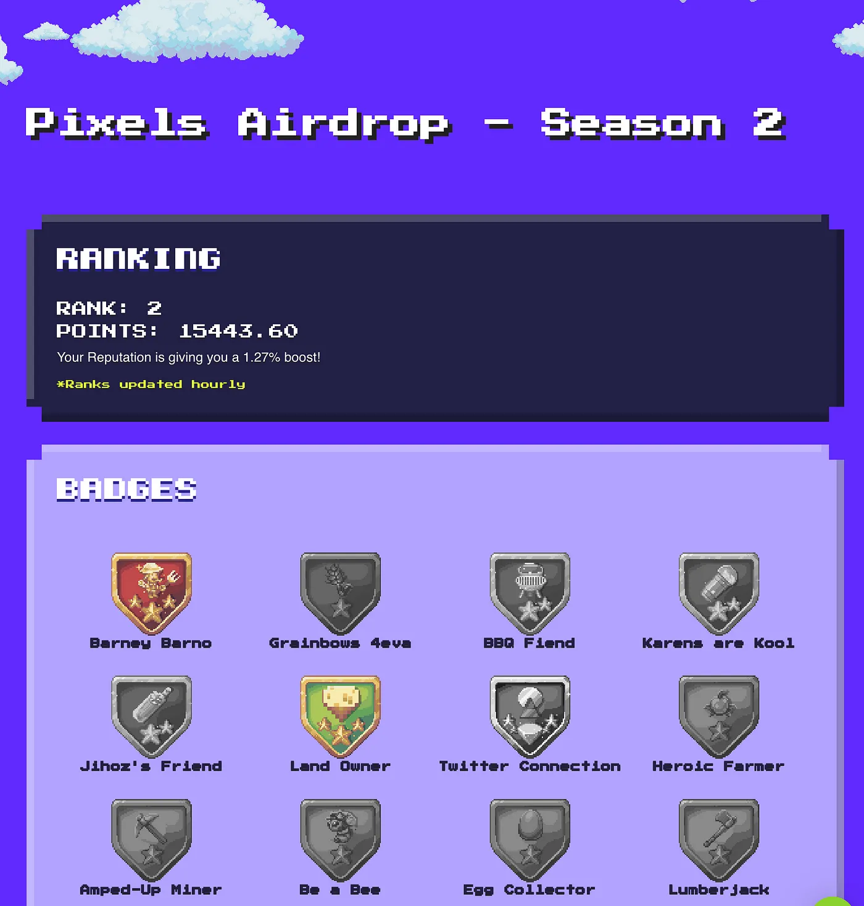

Pixel nft® | Official Site Home
Pixels NFT is a premium in-game currency in Pixels. Unlike $BERRY, which operates on an inflationary model and can be easily acquired through in-game interactions to facilitate gameplay, $PIXEL will be difficult to come by & provide different utility. Expect utility that will enhance gameplay but will not hinder free-to-play players from participating.
Recently, players and speculators are starting to get their eyes on Pixels, which is a new MMO game with an integrated play-to-earn ecosystem. MMO games surely hit our gamer vibes and excite us to meet and interact with the other members of the community. Let’s dive deep on how to start playing Pixels!
Utility you can expect:
- ➡️ Guild features
- ➡️ Pet Mints
- ➡️ Quality of Life enhancements
Players will be able to earn PIXELS NFT by playing Pixels, but not as easily as they can $BERRY. PIXELS NFT generation is loosely integrated to the core gameloop of Pixels, unlike $BERRY. Only top players will be able to earn PIXEL NFT by completing challenging tasks or actively contributing to the ecosystem’s growth.
Marketplace
Tensor is Solana's Leading NFT Marketplace built for traders 📈 and creators 🎨.
- Deepest liquidity on all of Solana
- Coverage of 30,000+ collections on Solana
- A lightning-fast, composable UI that updates in real-time
- Advanced functionality for pros
- Full support for market-making orders and collection-wide bids
- Fun rewards for trading
What is Pixels Nft?
Just like the other play-to-earn games, Pixels is trying to build an ecosystem wherein players use digital assets as avatars in the game to progress further and gather rewards that they will truly own too. In terms of long-term vision, the team behind Pixels is trying to create a game similar to the popular game called Runescape in the traditional gaming genre.
During this early stage of development, however, the game will begin as an MMO game with a farming mechanic. Farming is the first mechanic released in the game. The set of farming mechanics takes heavy inspiration from the popular traditional games Animal Crossing and Stardew Valley. Furthermore, players can try out Pixels for free as the game currently features a free-to-play ‘play as a guest’ feature when you load up the game so everyone can try out!
Based on this official tweet from the team, the game also received massive fundraising investments that were as big as $2.4 million funds led by Animoca Brands and PKO investments with OpenSea, Untapped Capital, and Leonis Capital joining the seed round as well.
According to this recent tweet from the official Pixels team, the game released better gameplay and more content. Additionally, players received rewards for playing the game and gathering play-to-airdrop points as they progressed to get rewards.
Players in the game were able to gather play-to-airdrop points by the following methods:- Playing and progressing through the game
- Becoming a top player in the leaderboards
- Completing quests
- Owning a land
- Holding land
- Sharing the game!
- Over 500,000 people playing Pixels
- Peaked at 40,000 DAU
- 80,000 active wallets on-chain
- Login to Pixels! If you’re new, you’ll need to create an account: https://play.pixels.xyz/
- Head to the Pixels Dashboard to find the P2A 2.0 badges page: https://pixels.xyz/airdrop2
- Work through the tasks required to get badges
- Look out for more badges being added throughout the campaign!
- ➡️ P2A 2.0 will run for 2 weeks
- ➡️ New badges will be added throughout the campaign
- ➡️ The top 7,000 players on the P2A 2.0 Leaderboard will qualify for the $PIXEL airdrop
- ➡️ 1,000 players that have a score over 3,000 will randomly selected to receive $PIXEL allocation as well
- ➡️ The higher your Reputation Score, the better:
- 1000+ = 10% multiplier
- 2000+ = 20% multiplier
- 3000+ = 30% multiplier
- ➡️ Refer friends to earn more points!
- ➡️ Leaderboard rank is updating hourly
- ➡️ Qualifying participants from our first Play-to-Airdrop will still receive $PIXEL, regardless of participation in P2A 2.0
Also, the tweet announced that over the last two months, Pixels gained a massive popularity in the space gathering the following milestones:
How it all started: Play-to-Airdrop
One year ago, we ran an experiment and coined it ‘Play-to-Airdrop’ (P2A). This was a brand-new concept. It allowed anyone with a wallet & an internet connection to participate. Users didn’t have to join alpha groups or get whitelist codes from influencers; they just had to play the game. Since then, the concept of P2A has taken over Web3. P2A campaigns have become the new standard.
How to participate: P2A 2.0 starts now!
This P2A is totally different. Say goodbye to the days of tirelessly harvesting carrots until your hand ached!
There are still badges to earn, but they’re a bit different. And I heard there might be some new quests coming out as well!
 How to play:Everything you need to know: Pixels Nft
Conclusion
Pixels nft art has become increasingly popular in the NFT industry due to its unique style and ability to create eye-catching, visually appealing digital assets. Pixel art refers to a form of digital art where images are created using small, individual pixels, much like how video games were created in the 1980s and 1990s. This art style has become increasingly popular in recent years, especially with the rise of NFTs. Pixel art NFTs offer a unique visual experience, and they have become a valuable asset in the world of digital art.